Slide 9 หน้า 17–77 — Multivariate Time Series · คลิป Class 10 (2:21:41)
ทุกบทก่อนหน้าพยากรณ์ Y จากอดีตของ Y เองเท่านั้น (univariate) แต่ยอดขายขึ้นกับงบโฆษณา การบริโภคขึ้นกับรายได้ บทนี้เพิ่มตัวแปรอื่นเข้ามา อาจารย์สรุปการเลือกโมเดลตามโครงสร้างข้อมูลไว้สามแบบ (สไลด์หน้า 50)
เครื่องมือประกอบคือ Granger causality test (X ช่วยพยากรณ์ Y ไหม) และ cross-correlation (X กับ Y สัมพันธ์กันที่ lag ไหน)
causality() และ "ดูเฉพาะ $Granger อย่าดู $Instant" (1:54:29)| หัวข้อ | เนื้อหา | สไลด์ |
|---|---|---|
| 1 | ภาพรวม multivariate | 17–18, 50 |
| 2 | GLS: regression ที่ error เป็น AR | 19–26 |
| 3 | ARIMAX และขั้นตอน | 27–31 |
| 4 | Granger causality และ uschange | 32–39 |
| 5 | MIDAS (แนวคิด) | 40–41 |
| 6 | Cross-correlation: Bsales | 42–48 |
| 7 | VAR: แนวคิด จำนวนพารามิเตอร์ และการเลือก p | 49, 51–54 |
| 8 | Dataset 1: var1 | 55–59 |
| 9 | เงื่อนไขของ VAR และ EuStockMarkets | 60–70 |
| 10 | Dataset 3: Cardiac Mortality (seasonal VAR) | 71–77 |
| 11 | แบบฝึกห้าแบบ | — |
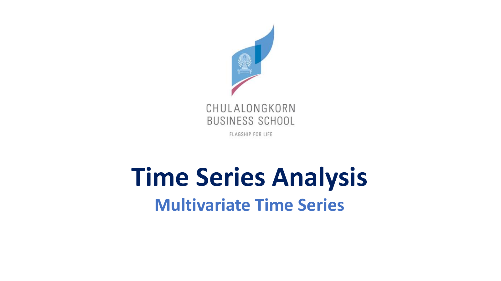
Class 10 อาจารย์บอกว่า "วันนี้ผมจะสอนคุณจนจบ VAR" (0:02:11) สมัยก่อนสอน GLS ด้วย แต่เทอมนี้ไม่สอน (0:01:02) และ "ตัวที่น่าจะมีประโยชน์กับนิสิตก็น่าจะเป็นตัว ARIMAX" (0:03:31)
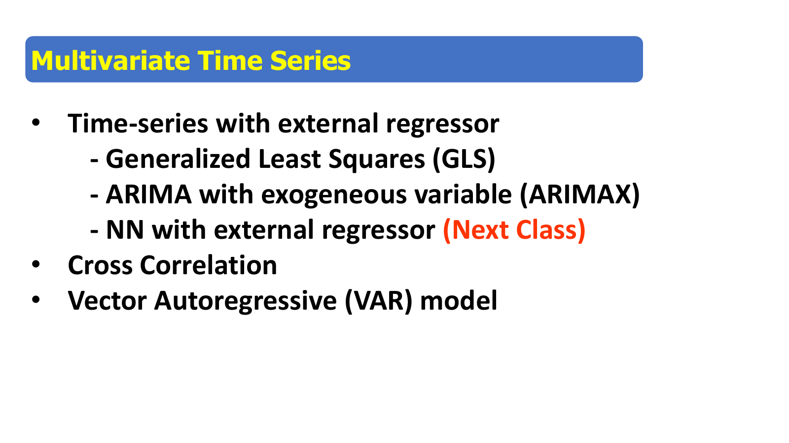
รายการหัวข้อของส่วนนี้: time series ที่มีตัวแปรอธิบาย (GLS, ARIMAX และ neural network ซึ่งเลื่อนไปคาบหน้า), cross-correlation และ VAR ARIMAX คือ ARIMA with exogenous variable ตัวแปรภายนอกคือตัวแปรที่ใช้อธิบาย Y แต่ไม่ได้ถูกพยากรณ์ในโมเดล
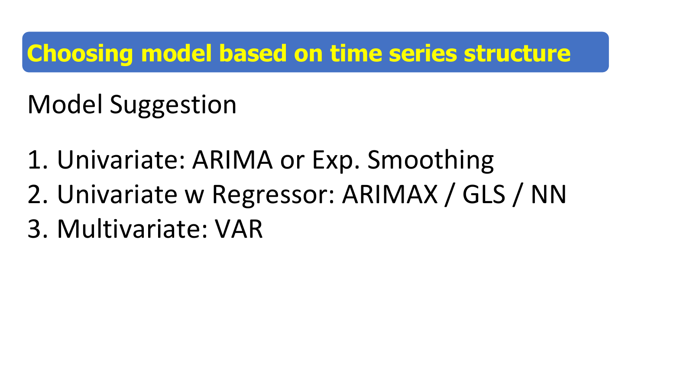
ตารางสามแถวนี้คือแผนที่ของทั้งวิชา ตัวอย่าง: ยอดขายรายเดือนอย่างเดียวใช้ ARIMA หรือ ETS ยอดขายกับงบโฆษณาที่บริษัทกำหนดเองใช้ ARIMAX (งบโฆษณาไม่ต้องพยากรณ์เพราะรู้ล่วงหน้า) ส่วนราคาหุ้นสี่ตลาดที่ต่างส่งผลต่อกันและต้องพยากรณ์ทุกตัวใช้ VAR (Class 10, 1:12:11)
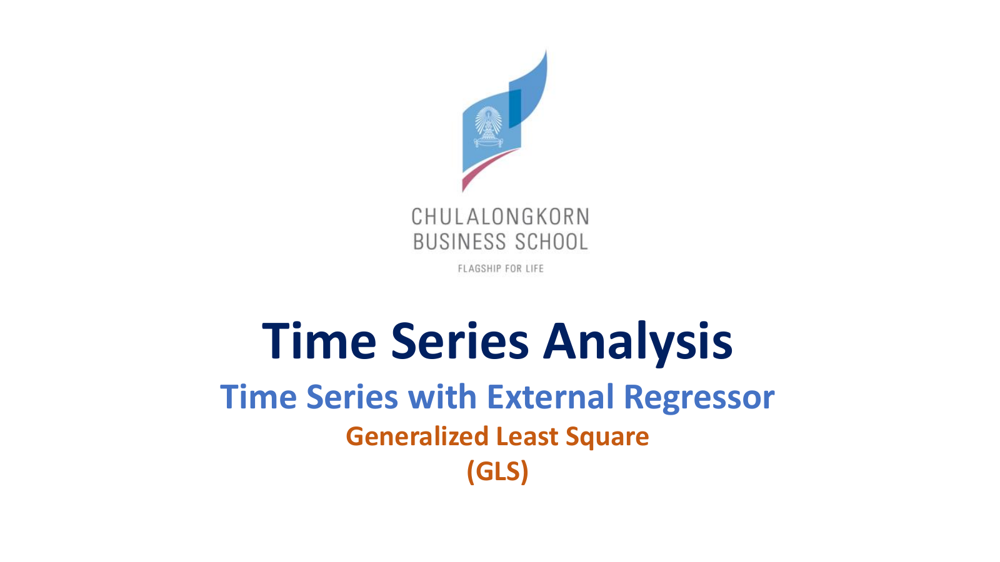
อาจารย์ไม่ได้สอนส่วนนี้ในเทอมนี้ แต่สไลด์และโค้ดยังอยู่ จึงอธิบายไว้เพราะเป็นฐานของ ARIMAX: ทั้งสองแก้ปัญหาเดียวกัน คือ regression ที่ error ไม่อิสระกัน
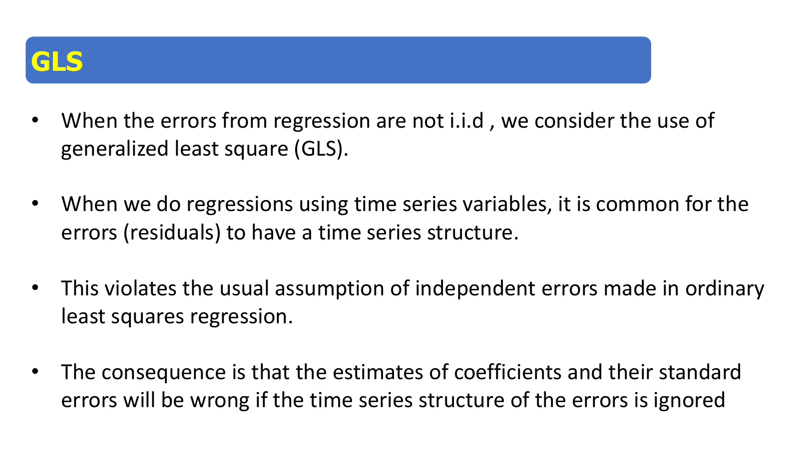
ใน regression ทั่วไป (OLS) สมมุติว่า error อิสระกัน แต่เมื่อตัวแปรเป็นอนุกรมเวลา residual มักสัมพันธ์ข้ามเวลา ผลคือค่าสัมประสิทธิ์และ standard error ผิด ถ้าไม่สนใจโครงสร้างนี้ โดยเฉพาะ s.e. ที่ผิดทำให้ t-test และ p-value ผิดไปด้วย
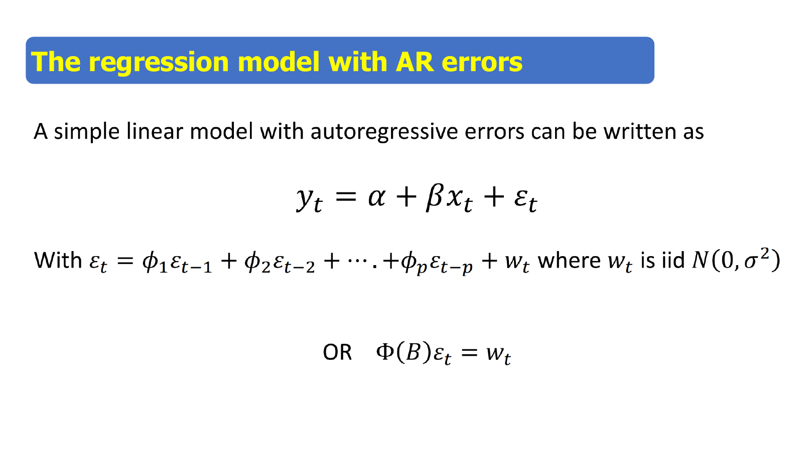
โมเดลคือ \(y_t=\alpha+\beta x_t+\varepsilon_t\) และ \(\varepsilon_t=\phi_1\varepsilon_{t-1}+\dots+\phi_p\varepsilon_{t-p}+w_t\) หรือ \(\Phi(B)\varepsilon_t=w_t\) ส่วนแรกคือ regression ปกติ ส่วนที่สองคือ AR ของ error เหมือนที่เรียนใน Lesson 5 ทั้งหมด แค่ใช้กับ residual แทนข้อมูล
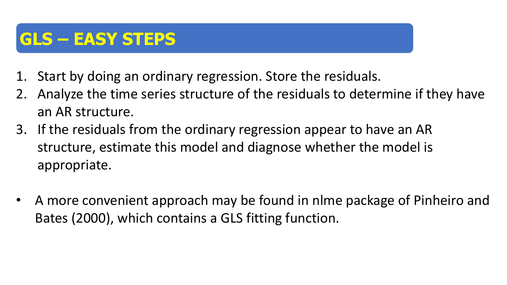
ขั้นตอน: (1) ทำ OLS แล้วเก็บ residual (2) ดูว่า residual มีโครงสร้าง AR หรือไม่ด้วย ACF/PACF (3) ถ้ามี ประมาณโมเดลที่มี AR error แล้วตรวจความเหมาะสม ในทางปฏิบัติใช้ฟังก์ชัน gls() ของ package nlme ทำครั้งเดียว
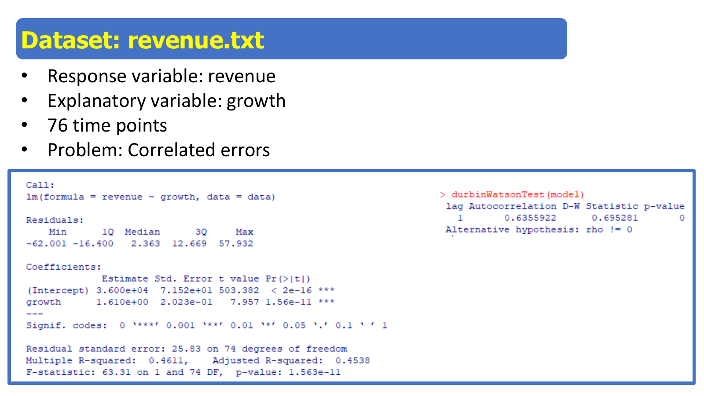
revenue.txt มี 76 จุดเวลา Y คือ revenue X คือ growth ปัญหาคือ error สัมพันธ์กัน
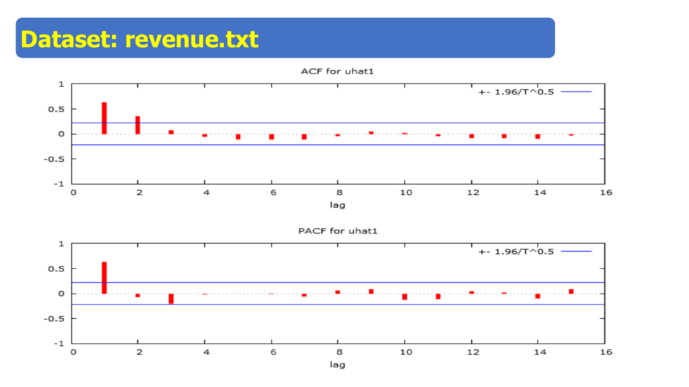
ACF ของ residual ทะลุเส้นที่ lag 1 (ราว 0.6) และ lag 2 แล้วลดลง ส่วน PACF ทะลุแค่ lag 1 จึงเป็น AR(1) ของ error durbinWatsonTest(model) ยืนยัน: autocorrelation lag 1 = 0.636, D-W statistic = 0.695 (ค่าที่ไม่มี autocorrelation คือราว 2) p-value ≈ 0
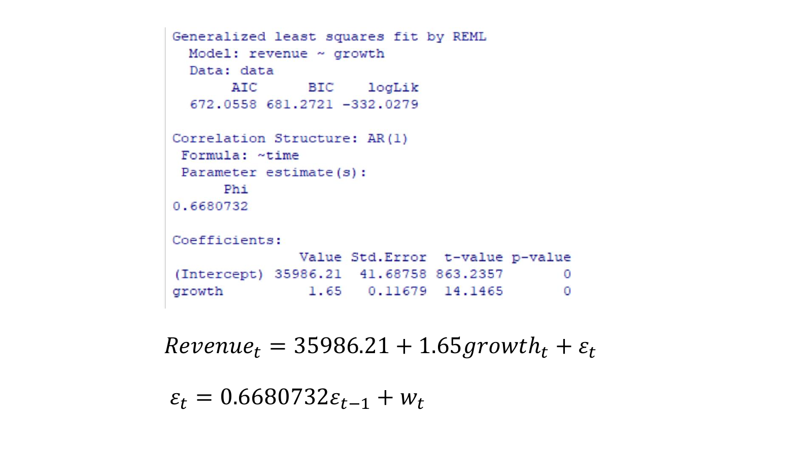
output ของ gls() ให้ทั้งสัมประสิทธิ์ regression และ φ ของ AR(1) ใน error เทียบกับ OLS ได้ดังนี้
revenue = 36001.83 + 1.610 growth, s.e. ของ growth = 0.202, t = 7.96
gls(revenue ~ growth, correlation = corAR1(form = ~time)): revenue = 35986.21 + 1.652 growth, s.e. = 0.117, t = 14.15 และ φ = 0.668
\(\mathrm{Revenue}_t=35986.21+1.65\,\mathrm{growth}_t+\varepsilon_t\), \(\varepsilon_t=0.6681\varepsilon_{t-1}+w_t\)
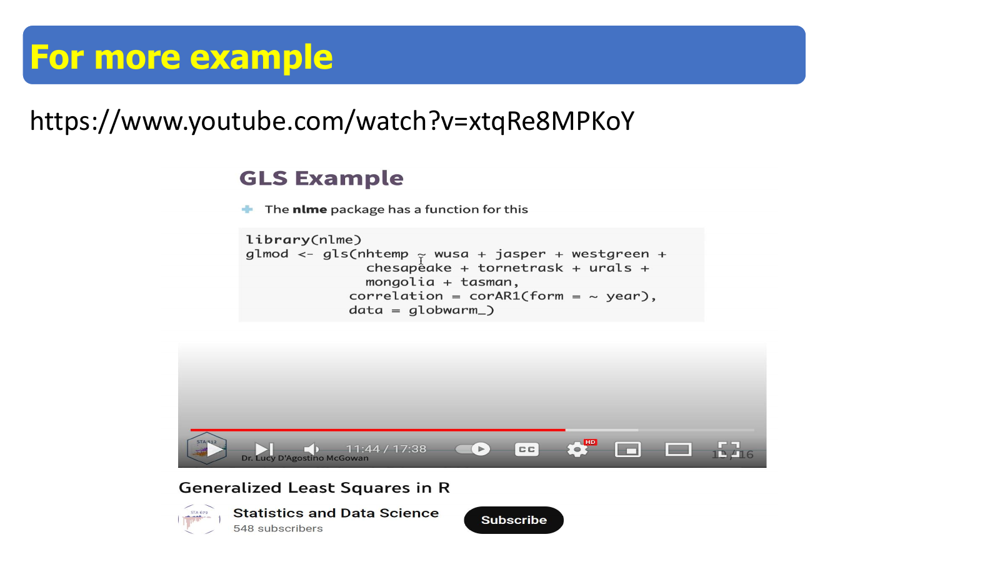
หน้านี้แนะนำคลิป YouTube สอน GLS ใน R ด้วย nlme ตัวอย่างในคลิปใช้ corAR1(form = ~ year) แบบเดียวกับ revenue โดย form บอกตัวแปรที่เรียงลำดับเวลา
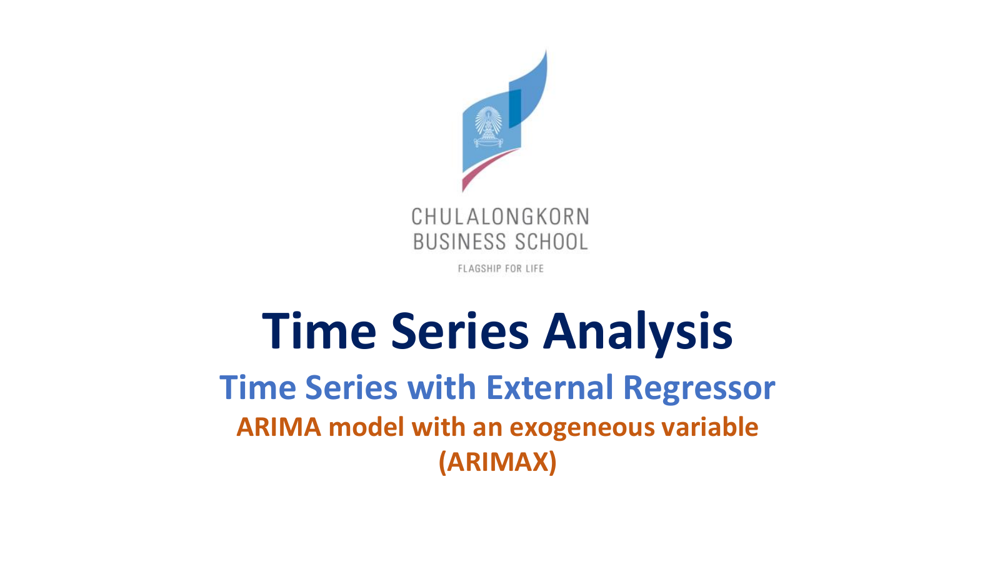
ARIMAX ขยายจาก GLS: แทนที่ error จะเป็นแค่ AR ให้เป็น ARIMA ได้ทั้งหมด
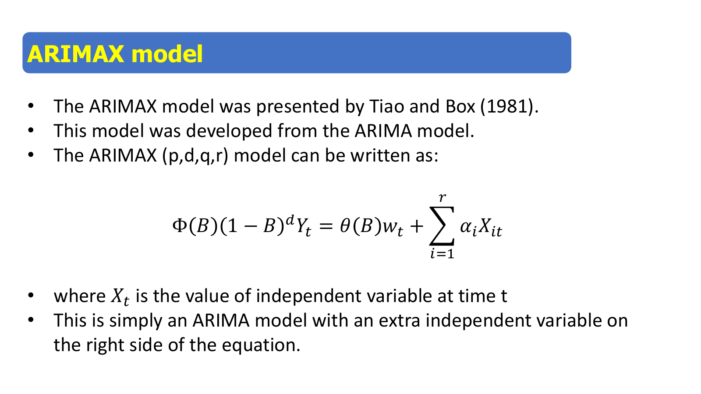
ARIMAX เสนอโดย Tiao และ Box (1981) คือ ARIMA ที่เติมตัวแปรอิสระ r ตัวทางขวามือ \(\Phi(B)(1-B)^dY_t=\theta(B)w_t+\sum_{i=1}^r\alpha_iX_{it}\) อาจารย์เขียนบนกระดานอีกรูปหนึ่ง \(y_t=\alpha_0+\sum\alpha_iX_{it}+w_t\) โดย \(w_t\) เป็น ARIMA(p,d,q) และ r คือจำนวนตัวแปรภายนอก "ไม่ใช่ parameter" (Class 10, 0:08:13, 0:11:49) สองรูปนี้ไม่เหมือนกันทุกประการ: R (auto.arima(..., xreg = )) ใช้รูปของกระดาน เรียกว่า regression with ARIMA errors ซึ่ง α คือผลของ X ต่อค่าเฉลี่ยของ Y โดยตรง ส่วนรูปบนสไลด์ ผลของ X ส่งต่อไปตามโครงสร้าง AR ด้วย
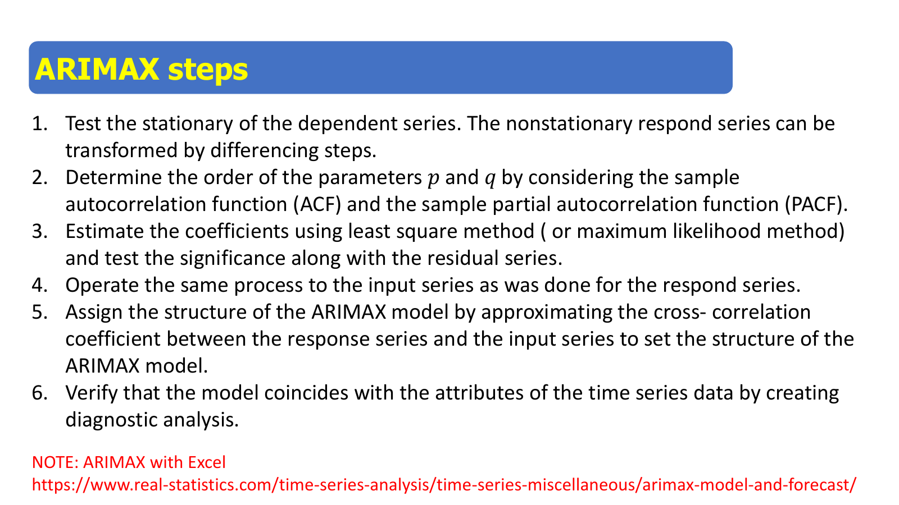
ขั้นตอน: ตรวจความนิ่งของ Y (difference ถ้าจำเป็น), หา p, q จาก ACF/PACF, ประมาณสัมประสิทธิ์และตรวจ residual, ทำขั้นเดียวกันกับตัวแปร X และใช้ cross-correlation ระหว่าง Y กับ X กำหนดโครงสร้าง lag ปัจจุบัน auto.arima ทำขั้น p, q ให้
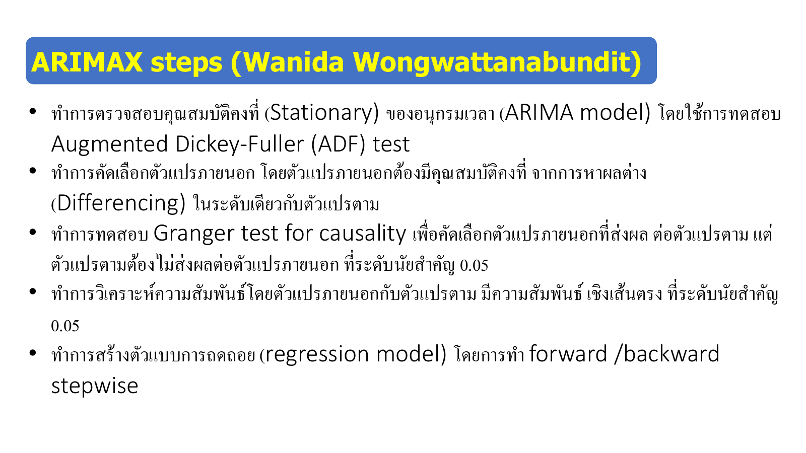
ขั้นตอนฉบับภาษาไทยเพิ่มรายละเอียดที่ใช้ได้จริง: ตรวจ stationary ด้วย ADF, ตัวแปรภายนอกต้อง difference ระดับเดียวกับตัวแปรตาม, ใช้ Granger test คัดตัวแปรภายนอกที่ส่งผลต่อตัวแปรตาม แต่ตัวแปรตามต้องไม่ส่งผลย้อนกลับ ที่ระดับนัยสำคัญ 0.05 แล้วสร้าง regression ด้วย forward/backward stepwise
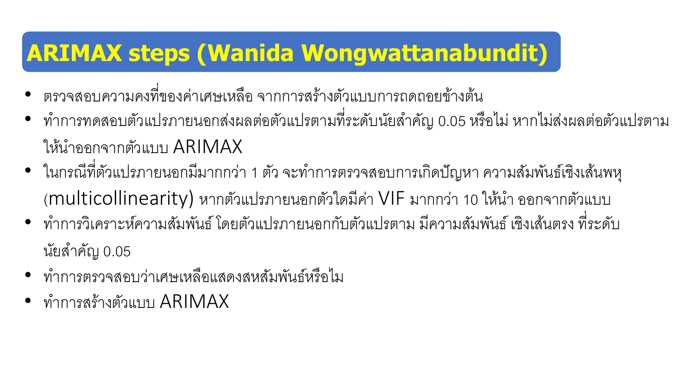
ต่อด้วยการตรวจความนิ่งของ residual จาก regression, ตัดตัวแปรที่ไม่มีนัยสำคัญ, ถ้ามีตัวแปรภายนอกหลายตัวให้ตรวจ multicollinearity และตัดตัวที่ VIF เกิน 10 และตรวจว่า residual ไม่มี autocorrelation เหลือ ข้อที่ว่าตัวแปรตามต้องไม่ส่งผลย้อนกลับสำคัญ เพราะถ้า Y ส่งผลต่อ X ด้วย X ก็ไม่ใช่ตัวแปรภายนอกจริง ควรใช้ VAR แทน
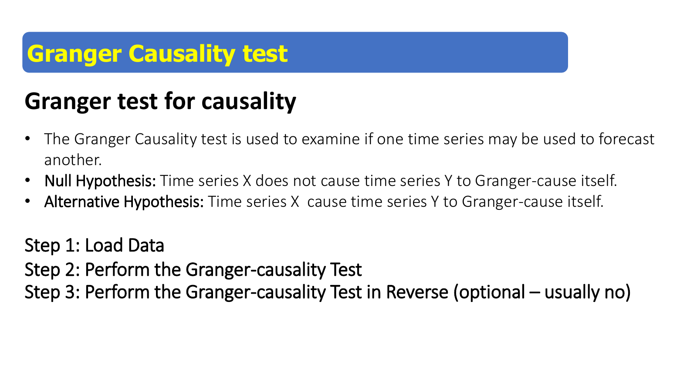
Granger test ถามว่า "อดีตของ X ช่วยพยากรณ์ Y ได้ดีขึ้นกว่าใช้อดีตของ Y อย่างเดียวหรือไม่" ไม่ใช่เหตุเป็นผลในความหมายทางวิทยาศาสตร์ H0: X does not cause Y (No Granger effect) H1: X causes Y (Class 10, 0:09:32) วิธีทดสอบคือเทียบสอง regression ด้วย F-test: Model 1 มี lag ของทั้ง Y และ X, Model 2 มีแค่ lag ของ Y ถ้า Model 1 ดีขึ้นอย่างมีนัยสำคัญ (p ต่ำ) แปลว่า X มี Granger effect ขั้นที่ 3 บนสไลด์คือทดสอบย้อนทิศ ซึ่งเป็นทางเลือก
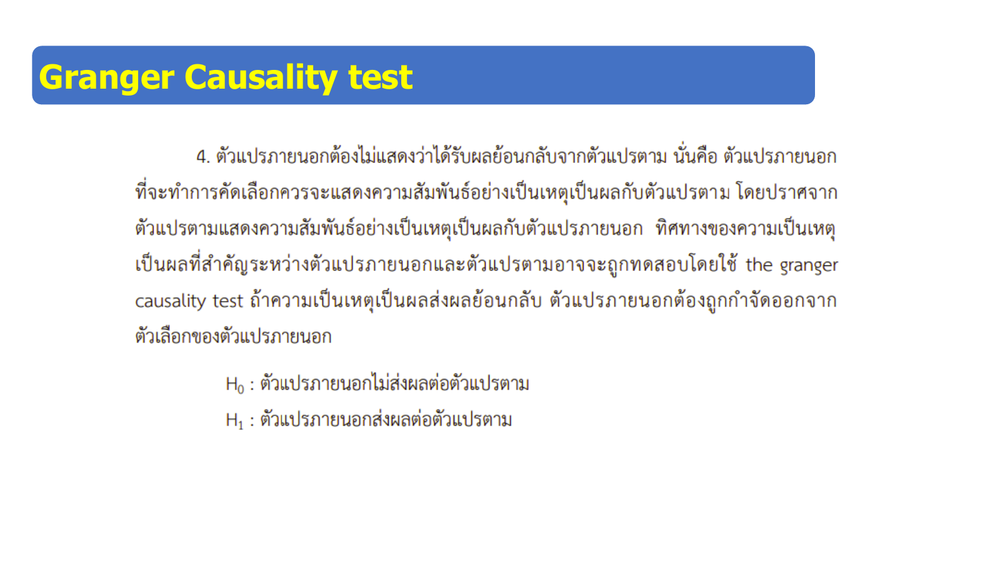
ข้อความภาษาไทยบนสไลด์ย้ำเงื่อนไขเดียวกับหัวข้อ 3: ตัวแปรภายนอกต้องไม่แสดงว่าได้รับผลย้อนกลับจากตัวแปรตาม ถ้าเป็นเหตุเป็นผลกันสองทาง ต้องตัดตัวแปรนั้นออกจากตัวเลือกของ ARIMAX H0 คือตัวแปรภายนอกไม่ส่งผลต่อตัวแปรตาม H1 คือส่งผล "ควรจะเช็คนะครับ เดี๋ยวอันนี้จะใช้เยอะ" เพราะจะใช้ใน VAR ด้วย (Class 10, 0:10:41)
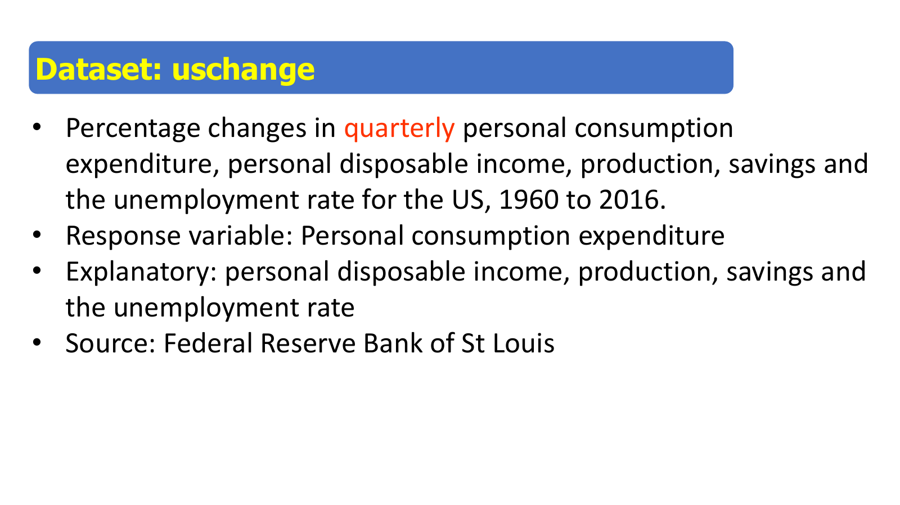
uschange คือการเปลี่ยนแปลงเป็นร้อยละรายไตรมาสของการบริโภค รายได้ การผลิต การออม และอัตราว่างงานของสหรัฐฯ 1960–2016 รวม 187 ไตรมาส Y คือ consumption และใช้ income เป็น X ตัวเดียวก่อน (Class 10, 0:18:23) ไฟล์ uschange.txt ไม่ได้อัปโหลดในโฟลเดอร์ ใช้ fpp2::uschange แทนได้ (ชื่อคอลัมน์ขึ้นต้นด้วยตัวใหญ่)
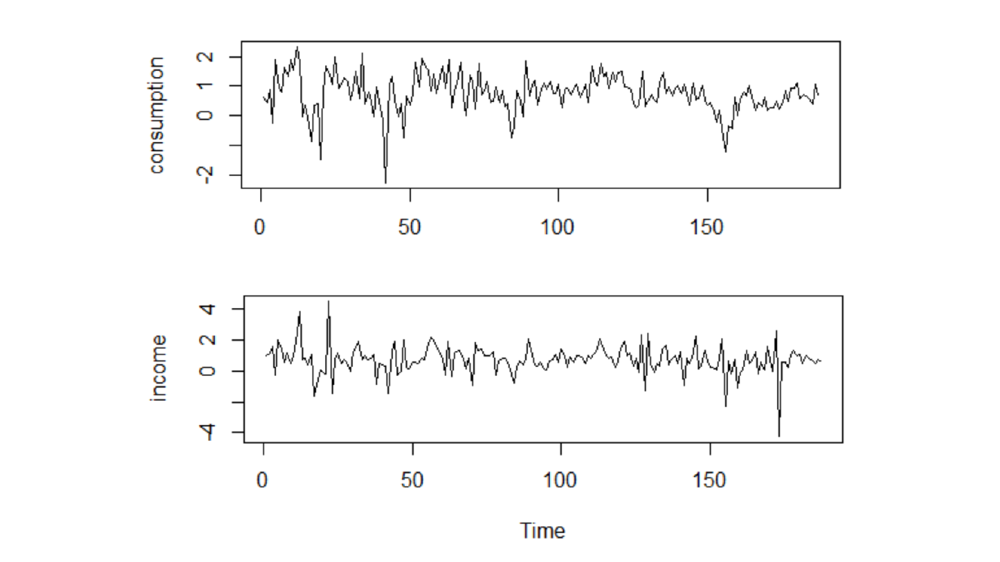
ทั้งสองอนุกรมแกว่งรอบค่าคงที่ ไม่มี trend เพราะเป็นร้อยละการเปลี่ยนแปลงอยู่แล้ว adf.test(consumption) ได้ Dickey-Fuller = −4.53, p = 0.01 จึงนิ่ง ไม่ต้อง difference (Class 10, 0:21:26) ช่วงประมาณปีที่ 40 (ราวปี 1980) consumption ลดลงแรงถึงราว −2.3 และ income มีค่าสุดโต่งช่วงท้าย
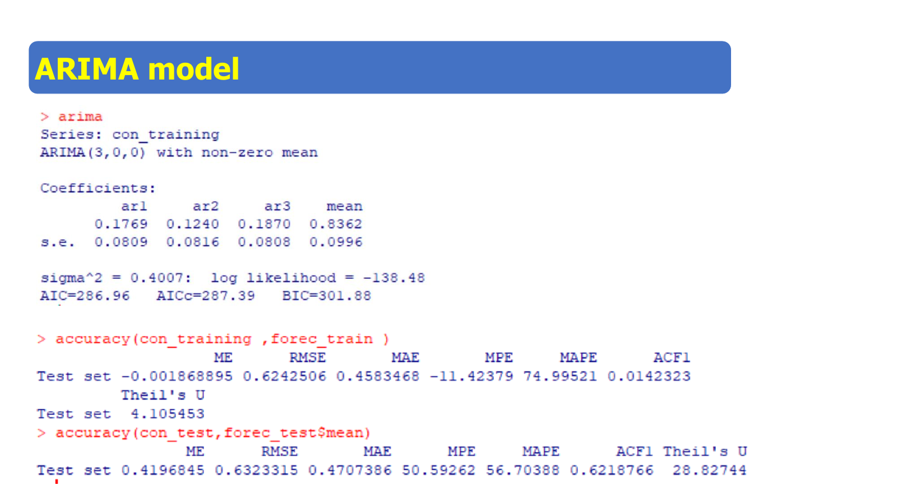
แบ่ง test = 41 ไตรมาสสุดท้าย (Class 10, 0:33:20) auto.arima กับ training ได้ ARIMA(3,0,0) with non-zero mean: φ = 0.1769, 0.1240, 0.1870, mean = 0.8362, σ² = 0.4007, AICc = 287.39 test RMSE = 0.632 (Class 10, 0:35:41–0:38:41)
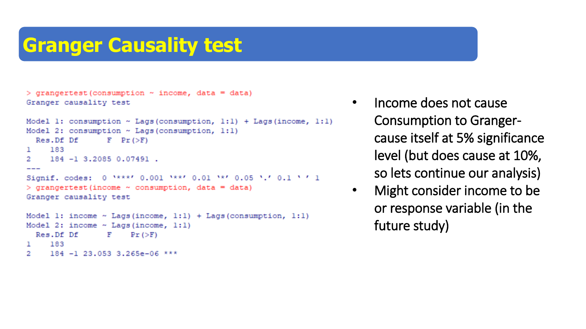
grangertest(consumption ~ income, data = data) ได้ F = 3.21, p = 0.07491 (ใช้ lag 1) ไม่มีนัยสำคัญที่ 0.05 ส่วนทิศกลับ grangertest(income ~ consumption) ได้ F = 23.05, p = 3.3 × 10⁻⁶ แปลว่า consumption ช่วยพยากรณ์ income แต่ income ไม่ช่วยพยากรณ์ consumption ตามเงื่อนไขในหัวข้อ 3 income จึงไม่ควรเป็นตัวแปรภายนอกของ consumption และสไลด์ก็เขียนว่าอาจพิจารณาให้ income เป็นตัวแปรตามในอนาคต "ถ้า ARIMAX มันเหมาะ X มันควรจะมี Granger effect on y แต่นี่มันไม่ใช่" (Class 10, 0:25:23)
สไลด์เขียนว่า "but does cause at 10%, so lets continue our analysis" แต่อาจารย์ตำหนิแนวทางนี้ในคลาส: การเปลี่ยน α หลังเห็นผลเป็น "การแก้แบบโง่ ๆ" ปัญหาจริงคือเลือก X กับ Y ผิด ต้องเริ่มจาก literature review (Class 10, 0:24:42–0:27:44) อาจารย์เทียบว่าวิทยาศาสตร์ใช้ Design of Experiment ควบคุมปัจจัยได้ แต่ data science และสังคมศาสตร์ต้องพึ่งทฤษฎีจากงานก่อน (0:29:08) ตัวอย่างนี้จึงทำต่อเพื่อสาธิตโค้ดเท่านั้น
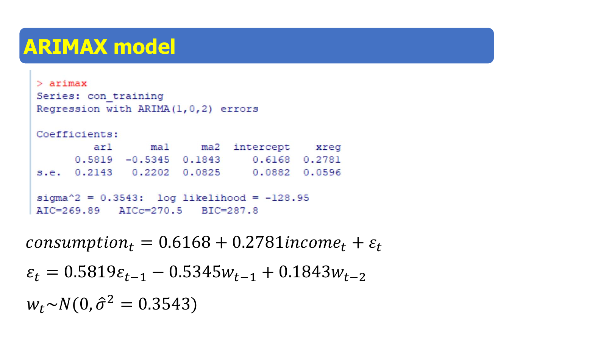
สไลด์เขียนสมการสามบรรทัดจาก output ของ auto.arima ที่มี xreg ขั้นการแปลงอยู่ในกล่องข้างล่าง
auto.arima(con_training, xreg = inc_training): Regression with ARIMA(1,0,2) errors ar1 = 0.5819, ma1 = −0.5345, ma2 = 0.1843, intercept = 0.6168, xreg = 0.2781, σ² = 0.3543, AICc = 270.5
\(\mathrm{consumption}_t=0.6168+0.2781\,\mathrm{income}_t+\varepsilon_t\) "intercept = 0.6168, xreg = slope หน้า income"
\(\varepsilon_t=0.5819\varepsilon_{t-1}-0.5345w_{t-1}+0.1843w_{t-2}+w_t\)
\(w_t\sim N(0,\hat\sigma^2=0.3543)\)
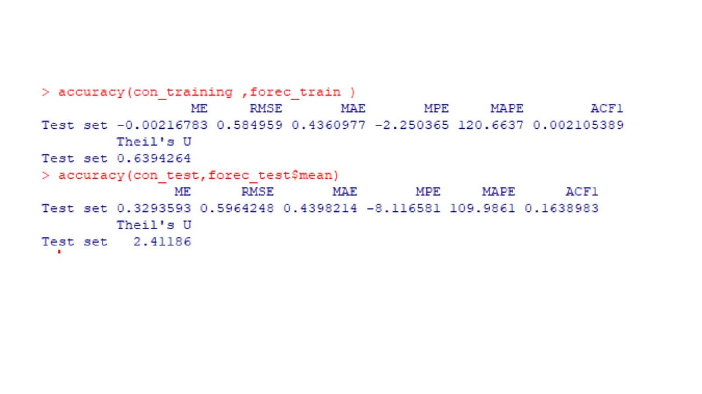
พยากรณ์ต้องส่ง income ของช่วง test เข้าไป forecast(arimax, xreg = inc_test) (Class 10, 0:44:12) test RMSE = 0.596 ต่ำกว่า ARIMA ที่ 0.632 ราว 0.04 (0:44:44) "ข้อสอบคงจะไม่ถามว่าคุณจะเติม X หรือไม่เติม X" อีกวิธีเทียบคือ F-test แบบเอา X ออก (0:46:39) ในงานจริง ARIMAX ใช้พยากรณ์ได้เมื่อรู้ X ของอนาคต เช่น งบโฆษณาที่วางแผนไว้แล้ว ถ้าต้องพยากรณ์ X ด้วยก็ควรใช้ VAR
โค้ดเรียก accuracy(con_test, forec_test$mean) แต่ forecast::accuracy() รับค่าพยากรณ์ก่อน ค่าจริงทีหลัง ผลจึงกลับเครื่องหมายของ ME และ MPE: output ได้ ME = +0.4197 (ARIMA) และ +0.3294 (ARIMAX) ถ้าเรียกถูกลำดับ accuracy(forec_test$mean, con_test) จะได้ −0.4197 และ −0.3294 ส่วน RMSE และ MAE เท่ากันทั้งสองแบบ MAPE ก็เปลี่ยนเพราะหารด้วยค่าคนละชุด เป็นกับดักเดียวกับที่พบใน Lesson 2
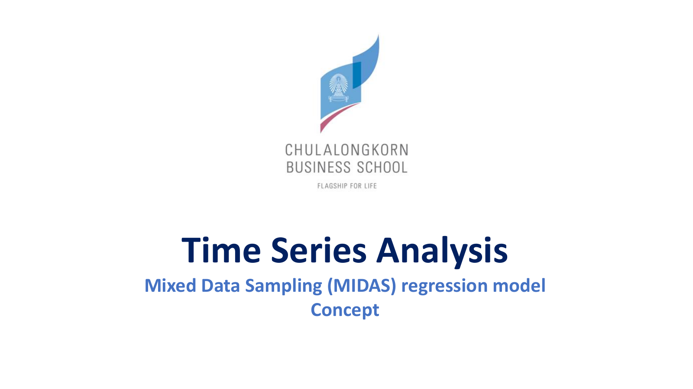
ส่วนนี้มีเฉพาะแนวคิด ไม่มีโค้ดและไม่ได้ลงรายละเอียดในคลิป
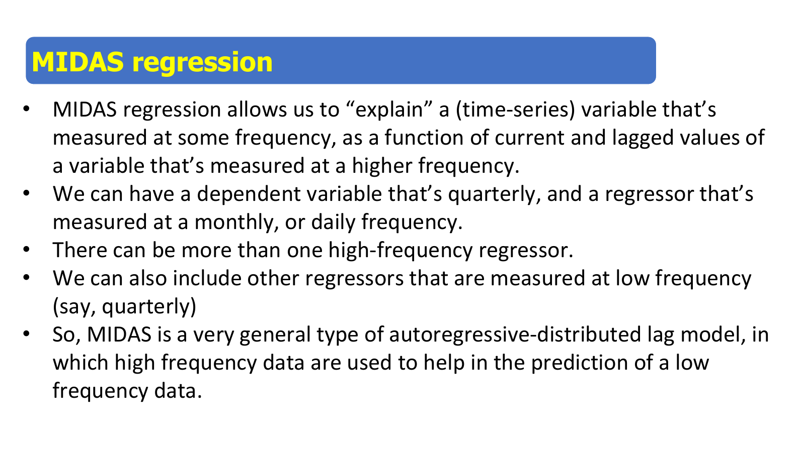
MIDAS ใช้เมื่อ Y กับ X เก็บด้วยความถี่ต่างกัน เช่น GDP รายไตรมาส (ความถี่ต่ำ) กับดัชนีราคาหุ้นรายวันหรือยอดค้าปลีกรายเดือน (ความถี่สูง) แทนที่จะเฉลี่ย X รายเดือนสามเดือนให้เป็นรายไตรมาสแล้วเสียข้อมูล MIDAS ใช้ค่าปัจจุบันและค่าล่าช้าของ X ความถี่สูงทั้งหมดเป็นตัวอธิบาย จึงเป็น autoregressive distributed lag แบบทั่วไป ตัวอย่าง: ไตรมาสหนึ่งมีสามเดือน X ในไตรมาสนั้นจึงมีสามค่าที่แต่ละค่ามีน้ำหนักของตัวเอง
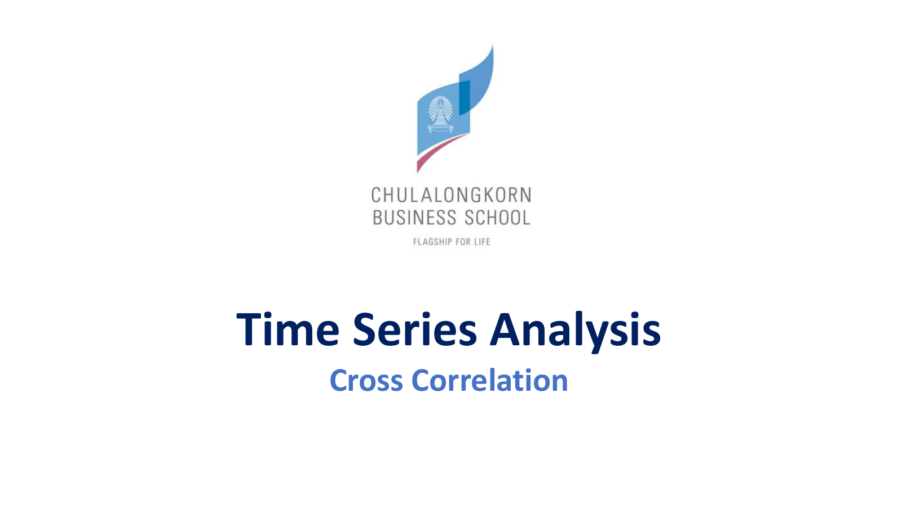
autocorrelation วัดความสัมพันธ์ของอนุกรมกับอดีตของตัวเอง cross-correlation ขยายไปวัดความสัมพันธ์ของสองอนุกรมที่ lag ต่าง ๆ "CCF มันเป็นแค่ EDA ... ไม่ใช่ตัวโมเดลหลัก" (Class 10, 0:58:43) ใช้ช่วยตัดสินว่าควรใส่ X ที่ lag ไหน
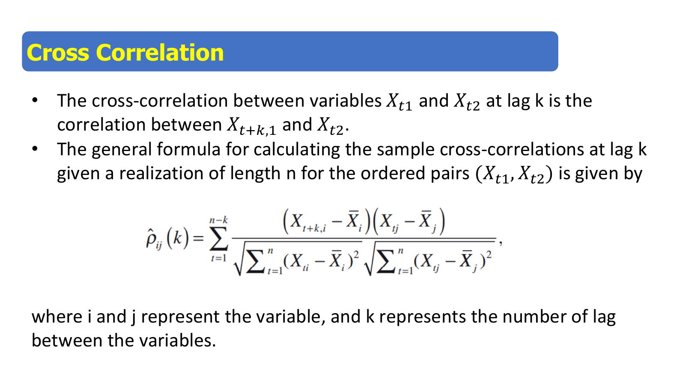
cross-correlation ระหว่าง \(X_{t1}\) และ \(X_{t2}\) ที่ lag k คือ correlation ของ \(X_{t+k,1}\) กับ \(X_{t2}\) สูตรคือ \(\hat\rho_{12}(k)=\dfrac{\sum_{t=1}^{n-k}(X_{t+k,1}-\bar X_1)(X_{t2}-\bar X_2)}{\sqrt{\sum(X_{t1}-\bar X_1)^2}\sqrt{\sum(X_{t2}-\bar X_2)^2}}\) จุดต่างสำคัญจาก ACF: ACF ที่ lag k กับ −k เท่ากัน แต่ CCF ไม่เท่า "ลำดับของอนุกรมมีผล" (Class 10, 0:51:15–0:52:52)
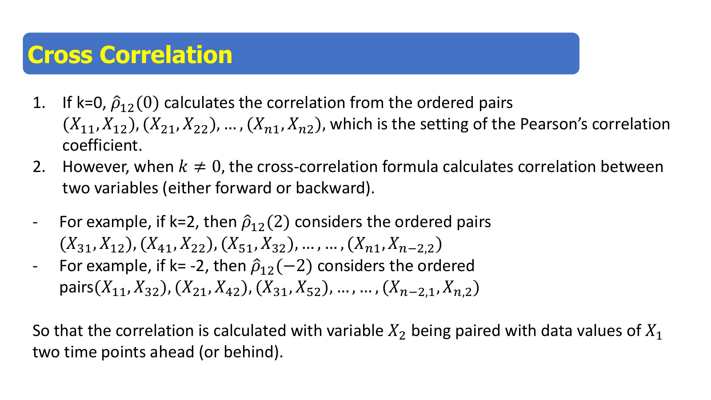
k = 0 คือ Pearson correlation ของคู่เวลาเดียวกัน k = 2 จับคู่ \((X_{31},X_{12}),(X_{41},X_{22}),\dots\) คือตัวแปร 1 ในอนาคตสองช่วงกับตัวแปร 2 ปัจจุบัน k = −2 จับคู่ \((X_{11},X_{32}),\dots\) คือตัวแปร 1 ปัจจุบันกับตัวแปร 2 ในอนาคตสองช่วง หรือมองกลับว่าตัวแปร 1 นำตัวแปร 2 อยู่สองช่วง
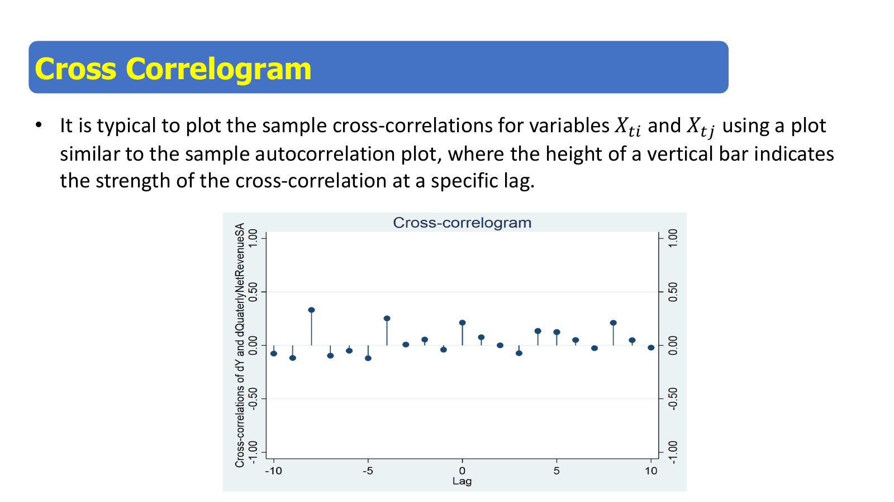
วาดเหมือน ACF แต่แกนนอนมีทั้ง lag ลบและบวก ความสูงของแท่งบอกความแรงของ cross-correlation ใน R ใช้ ccf(x, y) ซึ่งค่าที่ lag k คือ cor(x[t+k], y[t]) ดังนั้น lag ลบหมายถึง x ในอดีตเทียบกับ y ปัจจุบัน
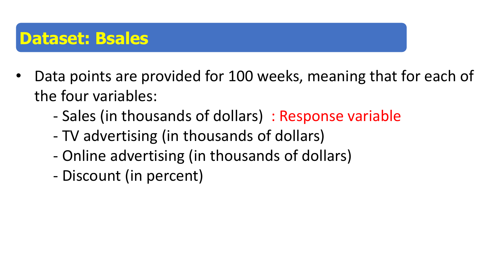
Bsales มี 100 สัปดาห์ สี่ตัวแปร: sales (พันดอลลาร์, ตัวแปรตอบสนอง), ad_tv, ad_online (พันดอลลาร์) และ discount (ร้อยละ)
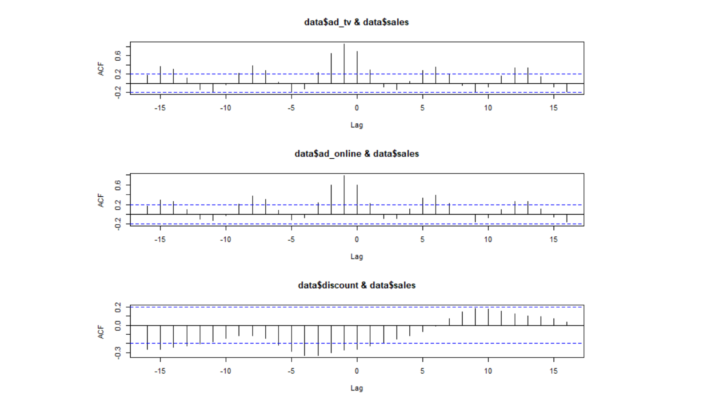
ccf(data$ad_tv, data$sales) มีค่าสูงสุดที่ lag −1 = 0.848 รองลงมาคือ lag 0 = 0.695 และ lag −2 = 0.641 ad_online มีรูปแบบเดียวกัน สูงสุดที่ lag −1 = 0.788 ส่วน discount ค่าสัมบูรณ์สูงสุดเพียง 0.333 และไม่มีแท่งเด่นที่ lag ใด (Class 10, 1:00:05–1:04:10)
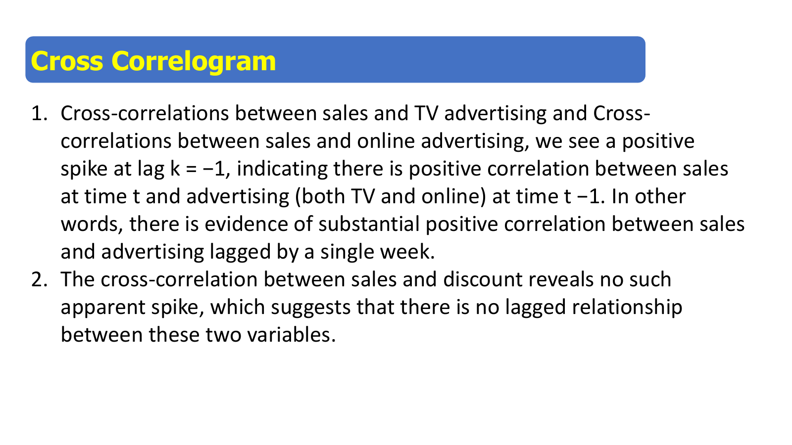
lag −1 ของ ccf(ad_tv, sales) หมายถึง ad_tv ที่เวลา t − 1 กับ sales ที่เวลา t ข้อสรุปคือยอดขายสัมพันธ์กับโฆษณาของสัปดาห์ก่อนมากที่สุด (ρ ≈ 0.8) ซึ่งสมเหตุสมผลเพราะลูกค้าต้องใช้เวลาตัดสินใจหลังเห็นโฆษณา ถ้าจะทำ ARIMAX จึงควรใส่ ad_tv ที่ lag 1 เป็นตัวอธิบาย ส่วนส่วนลดไม่มีความสัมพันธ์แบบล่าช้าที่ชัดเจน (Class 10, 1:04:10–1:06:41)
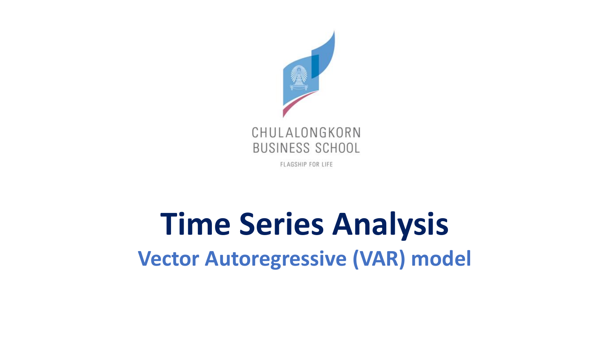
VAR คือ "simultaneous model" (Class 10, 1:11:20) ทุกตัวแปรถูกพยากรณ์พร้อมกัน และทุกตัวใช้ lag ของตัวเองและของตัวอื่นเป็นตัวอธิบาย
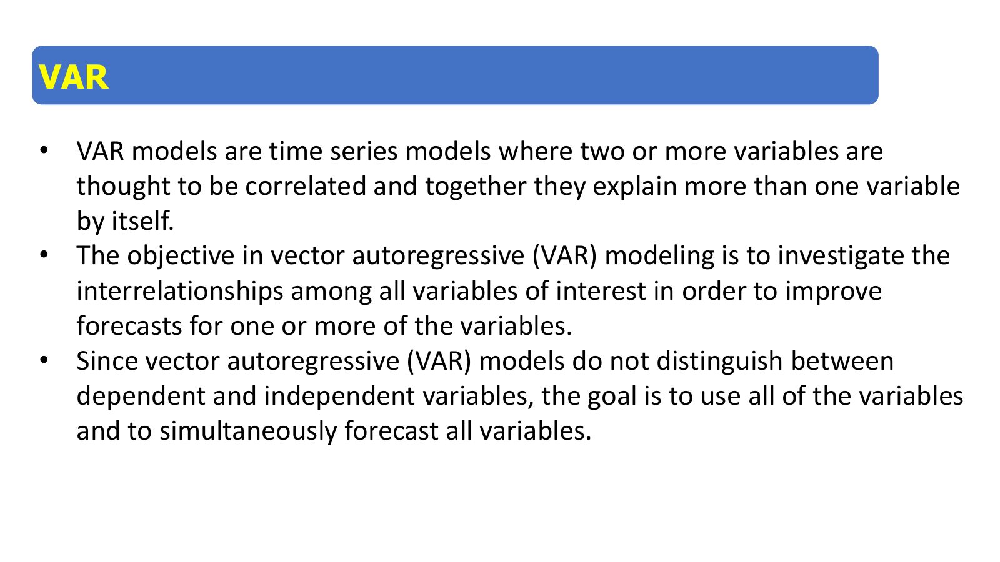
VAR ใช้เมื่อตัวแปรตั้งแต่สองตัวสัมพันธ์กัน และรวมกันอธิบายได้มากกว่าตัวเดียว เป้าหมายคือศึกษาความสัมพันธ์ระหว่างทุกตัวแปรเพื่อพยากรณ์ให้ดีขึ้น และเพราะ VAR ไม่แยกตัวแปรตามกับตัวแปรอิสระ จึงพยากรณ์ทุกตัวพร้อมกัน ต่างจาก ARIMAX ที่ต้องรู้ X ของอนาคต
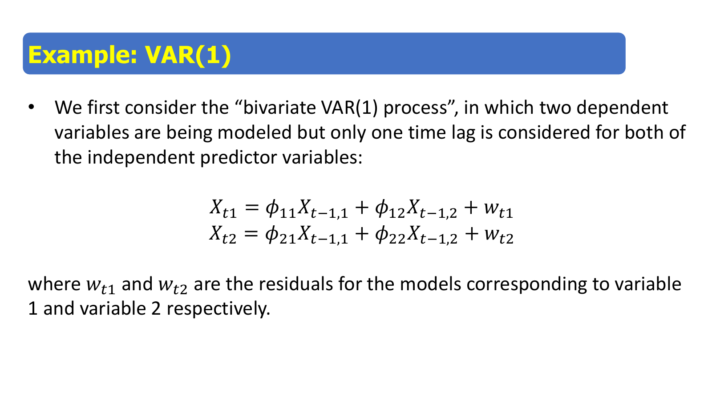
VAR(1) สองตัวแปร: \(X_{t1}=\phi_{11}X_{t-1,1}+\phi_{12}X_{t-1,2}+w_{t1}\) และ \(X_{t2}=\phi_{21}X_{t-1,1}+\phi_{22}X_{t-1,2}+w_{t2}\) แต่ละสมการคือ AR(1) ของตัวเองบวก lag 1 ของอีกตัว VAR ที่เรียนมีแค่ AR term ไม่มี MA (Class 10, 1:14:04) ตัวอย่างความหมาย: ถ้า φ₁₂ = 0.5 การโฆษณาสัปดาห์ก่อนเพิ่ม 1 หน่วยทำให้ยอดขายสัปดาห์นี้เพิ่ม 0.5 หน่วย
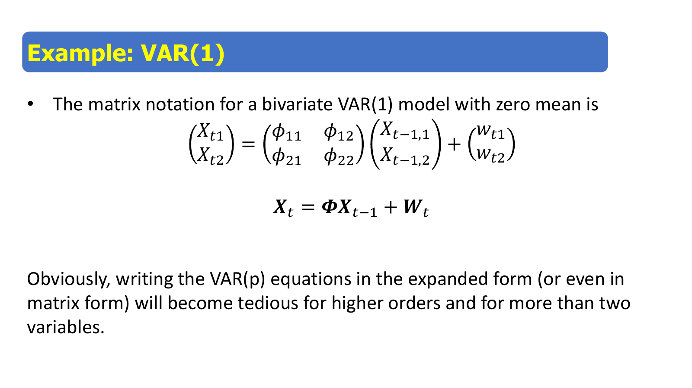
เขียนเป็นเมทริกซ์ \(\mathbf X_t=\mathbf\Phi\mathbf X_{t-1}+\mathbf W_t\) โดย Φ เป็นเมทริกซ์ 2 × 2 และ error มี covariance matrix ที่มี Var(w₁), Var(w₂) และ Cov(w₁, w₂) (Class 10, 1:21:13–1:22:25) เมื่อ p หรือจำนวนตัวแปรเพิ่ม การเขียนแบบเต็มจะยาวมาก
k ตัวแปร VAR(p) มี k สมการ แต่ละสมการมี φ จำนวน p × k ตัว (p lag ของทุกตัวแปร) ถ้ามีค่าคงที่ (type = "const") บวกอีก 1 ต่อสมการ
VAR(1): 2 ต่อสมการ รวม 4 · VAR(2): 4 ต่อสมการ รวม 8 · VAR(3): 6 ต่อสมการ รวม 12
9 × 4 = 36 ต่อสมการ รวม 144 φ
5 × 2 + 1 = 11 ต่อสมการ ข้อมูลที่ใช้ได้มีแค่ 20 − 5 = 15 แถว เหลือ df = 15 − 11 = 4 ซึ่งตรงกับ "on 4 degrees of freedom" ใน output
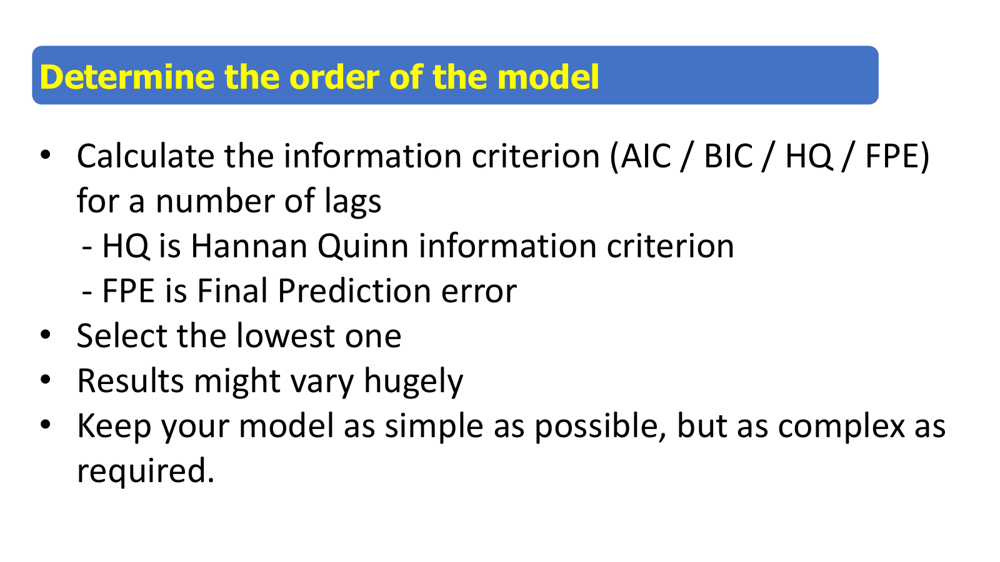
คำนวณ information criterion สี่ตัวสำหรับหลาย p แล้วเลือกค่าต่ำสุด: AIC, HQ (Hannan-Quinn), SC (Schwarz ซึ่ง "SC มันคือ BIC", Class 10, 1:28:17) และ FPE (final prediction error) สี่เกณฑ์อาจให้ p ต่างกันมาก "Results might vary hugely" ฟังก์ชันคือ VARselect() จาก package vars
var1 เป็นข้อมูลจำลองที่ออกแบบให้เห็นโครงสร้างของ VAR ชัด ๆ
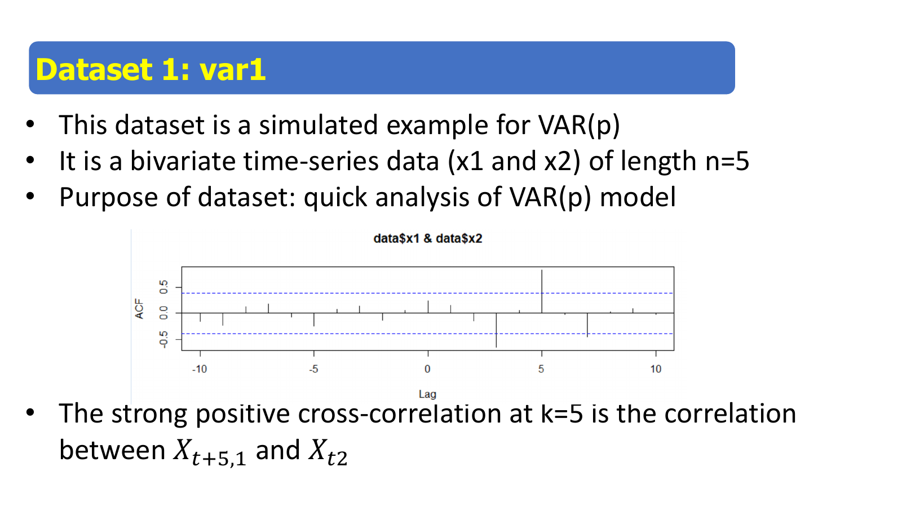
ไฟล์มี 25 แถว โค้ดใช้ 20 แถวแรก (สไลด์เขียนว่า length n = 5 ซึ่งน่าจะพิมพ์ผิด) ccf(data$x1, data$x2) มีค่าสูงสุดที่ lag 5 = 0.835 คือ correlation ของ \(X_{t+5,1}\) กับ \(X_{t2}\) หรือ x2 นำ x1 อยู่ 5 ช่วง "ในสมการ X_t,1 สัมประสิทธิ์หน้า X_{t−5,2} จะ significant" (Class 10, 1:24:41)
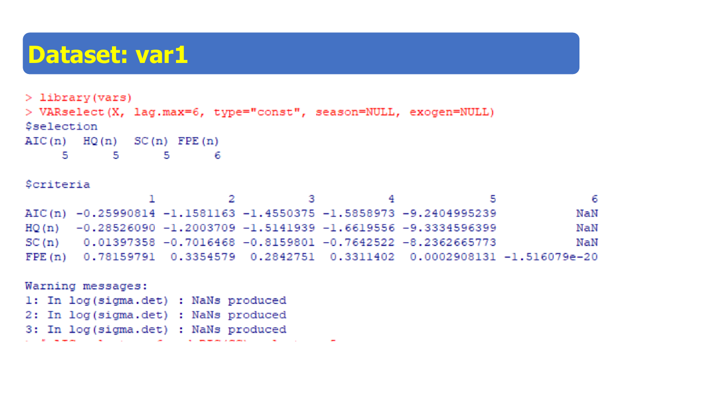
บนสไลด์ได้ AIC = 5, HQ = 5, SC = 5, FPE = 6 (Class 10, 1:28:17) แถว lag 6 ของ criteria เป็น NaN เพราะข้อมูลแค่ 20 แถวไม่พอประมาณ VAR(6) ที่มีพารามิเตอร์ 13 ตัวต่อสมการ เมื่อรันด้วย vars เวอร์ชันปัจจุบันได้ 6 ทุกเกณฑ์ เพราะวิธีจัดการ NaN ต่างกัน p = 5 สอดคล้องกับ CCF จึงเลือก VAR(5) อาจารย์อธิบาย type: "none" มีแต่ φ, "const" มี intercept, "both" มี intercept และ trend (Class 10, 1:32:04) และขั้นแรกต้องเช็คความนิ่งก่อน
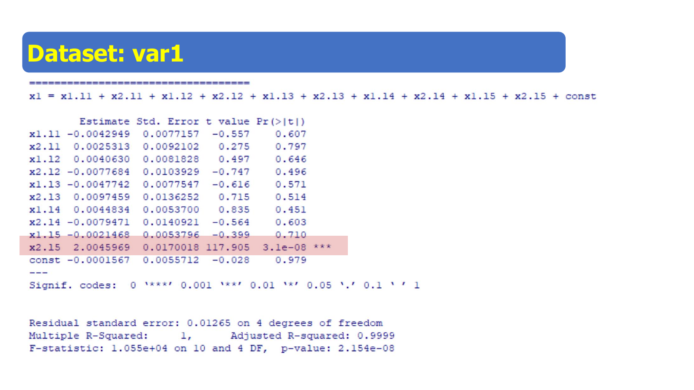
VAR(X, p = 5, type = "const") สมการ x1: x2.l5 = 2.0046 (s.e. 0.0170, t = 117.9, p = 3.1 × 10⁻⁸) ตัวอื่นไม่มีนัยสำคัญ const = −0.00016 (Class 10, 1:37:50) จึงสรุปได้ว่า \(x_{1,t}\approx2x_{2,t-5}\) ข้อมูลถูกสร้างมาแบบนี้ R² = 1 ด้วยเหตุนี้
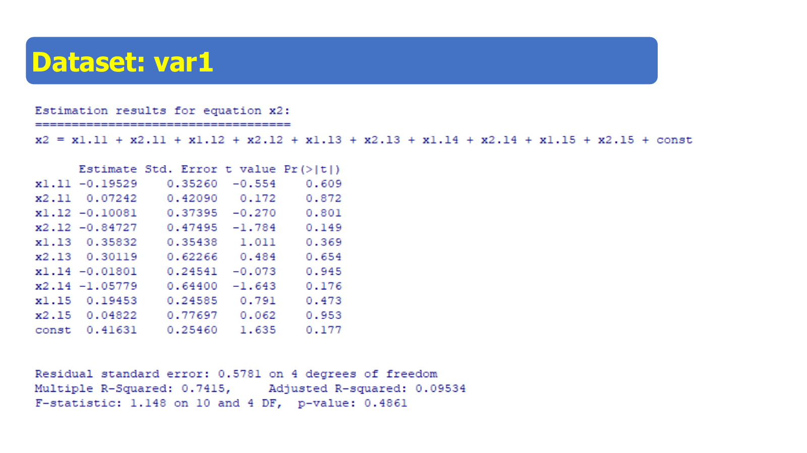
สมการ x2: const = 0.41631, x1.l1 = −0.19529 ไม่มีตัวไหนมีนัยสำคัญ (adjusted R² = 0.095, F p = 0.486) x2 จึงแทบเป็น noise ที่ไม่ขึ้นกับอดีต การพยากรณ์ predict(fit, n.ahead = 5) ให้ fcst, lower, upper แยกแต่ละตัวแปร (Class 10, 1:41:05) x1 ห้าก้าวถัดไปคือ 0.231, −1.905, 0.452, 3.613, −0.009 ซึ่งคือสองเท่าของ x2 ที่สังเกตแล้วเมื่อ 5 ช่วงก่อน จึงพยากรณ์ได้แม่นแม้ x2 จะเดาไม่ได้
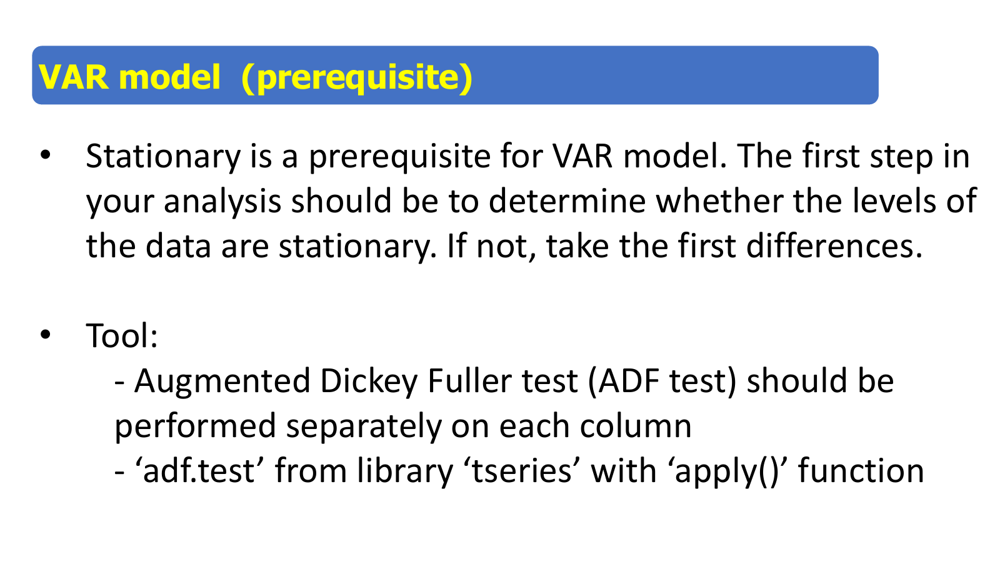
ความนิ่งเป็นเงื่อนไขของ VAR ขั้นแรกจึงตรวจ ADF ของทุกคอลัมน์แยกกัน ถ้าไม่นิ่งให้ difference ใช้ apply(data, 2, adf.test) โดย 2 คือทำทีละคอลัมน์ (Class 10, 1:43:44)
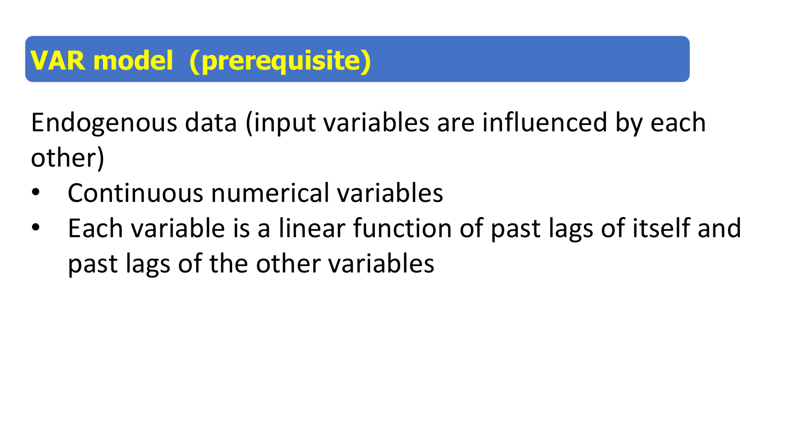
ตัวแปรใน VAR ต้องเป็น endogenous คือส่งผลต่อกัน เป็นตัวเลขต่อเนื่อง และแต่ละตัวเป็นฟังก์ชันเชิงเส้นของ lag ของตัวเองและตัวอื่น ถ้ามีตัวแปรที่ไม่ได้รับผลจากตัวอื่นเลย ควรใช้เป็น exogenous แบบ ARIMAX
ชุดที่สองเป็นข้อมูลจริงขนาดใหญ่ที่อยู่ใน base R
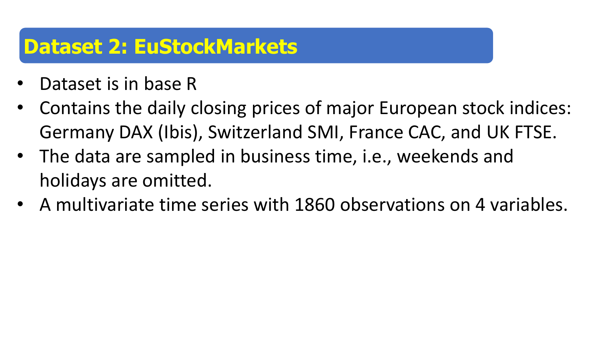
ราคาปิดรายวันของดัชนีเยอรมนี (DAX), สวิตเซอร์แลนด์ (SMI), ฝรั่งเศส (CAC) และอังกฤษ (FTSE) เฉพาะวันทำการ 1,860 วัน สี่ตัวแปร
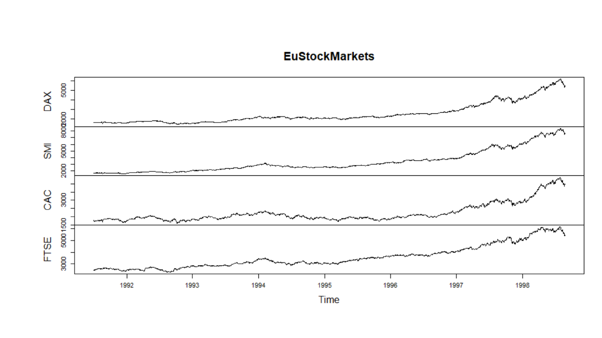
ทั้งสี่ดัชนีมี trend ขาขึ้นชัดเจน โดยเฉพาะช่วง 1997–1998 ADF ของราคา: DAX p = 0.96, SMI p = 0.98, CAC p = 0.99, FTSE p = 0.59 ไม่นิ่งทั้งหมด (H0 ของ ADF คือไม่นิ่ง) จึง stnry = diff(EuStockMarkets) แล้ว ADF ทุกตัวได้ p = 0.01 (Class 10, 1:45:54–1:46:57) VARselect(type = "none", lag.max = 10) ได้ AIC = 9, HQ = 1, SC = 1, FPE = 9 สไลด์เลือก p = 9 เพราะ AIC "is the most popular one"
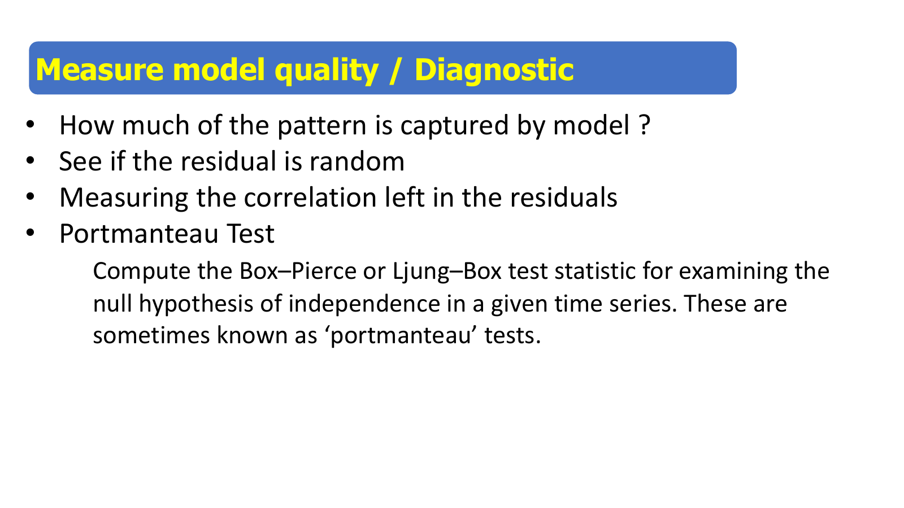
วัดว่าโมเดลจับ pattern ไปได้แค่ไหนด้วยการดูว่า residual เป็น random หรือไม่ ใช้ Box-Pierce หรือ Ljung-Box แบบหลายตัวแปร เรียกรวมว่า portmanteau test H0 คือ residual เป็นอิสระ ใน R ใช้ serial.test()
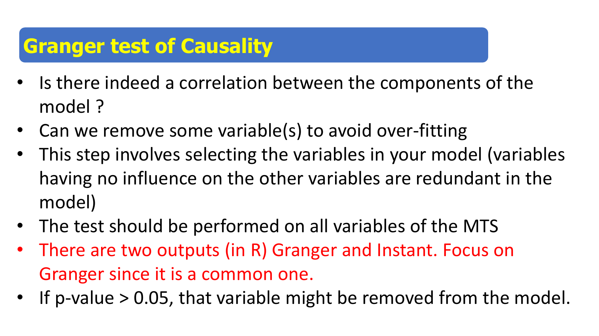
Granger ใน VAR ใช้ตรวจว่ามีตัวแปรที่ไม่มีอิทธิพลต่อตัวอื่น ซึ่งตัดออกได้เพื่อลด overfitting ทำกับทุกตัวแปร R ให้สองผล Granger และ Instant ให้ดู Granger ถ้า p > 0.05 อาจตัดตัวแปรนั้น "ดูเฉพาะ $Granger อย่าดู $Instant" (Class 10, 1:54:29)
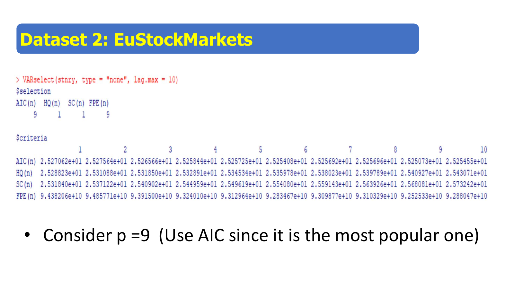
vars::VAR(stnry, lag.max = 10, ic = "AIC", type = "none") เลือก p = 9 ได้ 36 สัมประสิทธิ์ต่อสมการ รวม 144 ตัว ใช้ type = "none" เพราะผลต่างของราคามี mean ใกล้ศูนย์
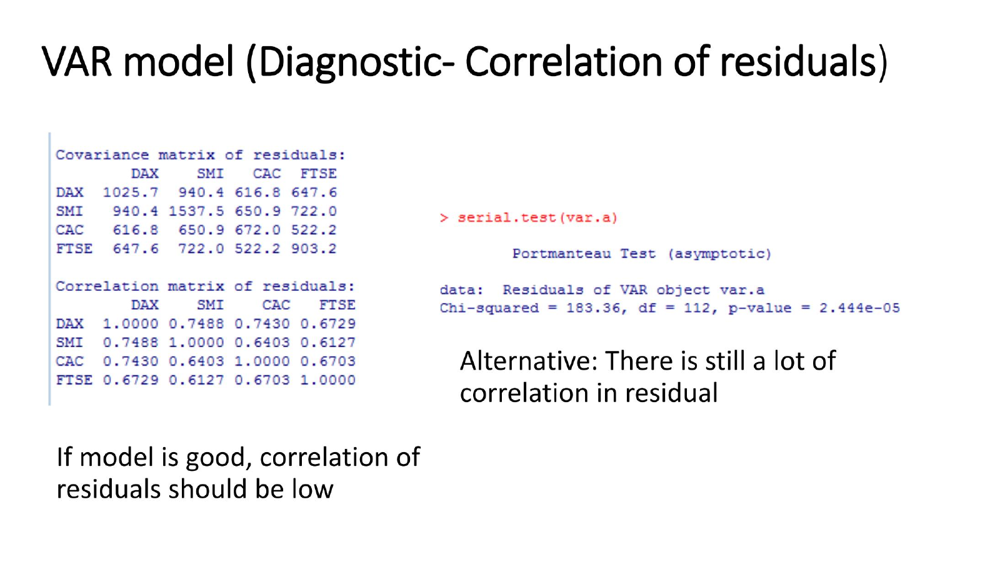
correlation ของ residual ระหว่างดัชนีสูง (DAX กับ SMI 0.749, DAX กับ CAC 0.743) แปลว่า shock ในวันเดียวกันเกิดพร้อมกันทั้งยุโรป ส่วน serial.test: Chi-squared = 183.36, df = 112, p = 2.4 × 10⁻⁵ จึง reject H0 residual ยังมี autocorrelation เหลือ "อาจจะต้องเปลี่ยน P" (Class 10, 1:52:07) df = 112 มาจาก k²(h − p) = 16 × (16 − 9) เมื่อใช้ lag 16 ในการทดสอบ ในคลิปช่วงหนึ่งอาจารย์พูด "อยากให้ p-value ต่ำ ๆ" ซึ่งขัดกับ H0 แล้วสรุปถูกว่า p ต่ำคือไม่ผ่าน
ทางเลือกคือเปลี่ยน p, เปลี่ยน type, difference ครั้งที่สอง หรือ take log ของข้อมูล (ราคาหุ้นมักใช้ผลต่างของ log คือผลตอบแทน) สไลด์ตัดสินใจใช้ VAR(9) ต่อ การบ้านของอาจารย์คือลอง p = 1 (Class 10, 1:55:59)
ผล Granger ของแต่ละดัชนี (H0: ดัชนีนั้นไม่ Granger-cause อีกสามตัว): DAX F = 1.73, p = 0.0107; SMI F = 2.65, p = 7.1 × 10⁻⁶; CAC F = 1.85, p = 0.0046; FTSE F = 1.94, p = 0.0024 ทุกตัวมีนัยสำคัญ จึงไม่ตัดตัวไหน (Class 10, 1:54:57) df1 = 27 คือ 9 lag × 3 ตัวแปรอื่น ส่วน $Instant ของ SMI ได้ χ² = 686.75 ซึ่งสะท้อน correlation ของ residual ในวันเดียวกันที่เห็นในหน้าก่อน พยากรณ์ predict(var.a, n.ahead = 25) ได้สี่ดัชนีพร้อมกัน แต่เป็นค่าของผลต่าง ต้อง undifference เอง (Class 10, 1:56:08)
ชุดสุดท้ายแสดง VAR ที่มีทั้ง trend และ seasonal โดยไม่ difference
cardiac จาก package tswge: อัตราการเสียชีวิตจากโรคหัวใจ (cmort), อุณหภูมิ (tempr) และมลพิษอนุภาค (part) รายสัปดาห์ 1970–1979 รวม 508 สัปดาห์ มี trend และ seasonal 52 สัปดาห์ (Class 10, 1:57:31) season = 52 สร้าง dummy 51 ตัว (sd1–sd51) สัปดาห์สุดท้ายคือ dummy ทุกตัวเป็น 0 เพราะถ้าใช้ 52 ตัวจะเกิด linear dependence กับค่าคงที่ (Class 10, 1:59:04) และ type = "both" ใส่ intercept กับ slope × t แทนการ difference (2:00:05)
output แสดงสัมประสิทธิ์ของสมการ cmort ทั้งหมด ส่วนที่ไฮไลต์คือค่าคงที่และ trend ที่มาจาก type = "both"
const = 55.334, trend = −0.01462 ต่อสัปดาห์ (อัตราเสียชีวิตลดลงช้า ๆ)
cmort.l1 = 0.2623, tempr.l1 = −0.1252, part.l1 = −0.0486
cmort.l2 = 0.3330, tempr.l2 = −0.0437, part.l2 = −0.0203
\(\mathrm{cmort}_t=55.334-0.0146t+0.2623\,\mathrm{cmort}_{t-1}-0.1252\,\mathrm{tempr}_{t-1}-0.0486\,\mathrm{part}_{t-1}+0.3330\,\mathrm{cmort}_{t-2}-0.0437\,\mathrm{tempr}_{t-2}-0.0203\,\mathrm{part}_{t-2}-4.378\,sd_1-2.528\,sd_2-\dots-0.669\,sd_{51}+w_t\)
แบบมี seasonal dummy ได้ AIC = 5, HQ = 2, SC = 2, FPE = 5 แบบไม่มีได้ 9, 5, 2, 9 สไลด์เลือก VAR(2) และ VAR(9) และเพิ่ม VAR(7) เพราะ CCF บอกว่า cmort สัมพันธ์กับ part ที่ lag 7 สัปดาห์ (Class 10, 2:04:25–2:05:48) แบ่ง train ถึงสัปดาห์ที่ 40 ของปี 1978 (456 สัปดาห์) และ test 52 สัปดาห์ถัดไป Ljung-Box ของ residual cmort: p = 0.087 (p = 2), 0.055 (p = 9), 0.011 (p = 7) VAR(7) แบบมี seasonal จึงไม่ผ่าน
RMSE ของ cmort ใน test 52 สัปดาห์ (คำนวณเฉพาะตัวแปรที่สนใจ): VAR(2) = 6.35, VAR(9) = 6.44, VAR(7) = 6.41 VAR(2) ดีที่สุดเล็กน้อย ตรงกับที่รันได้ทุกค่า
เมื่อตัด seasonal dummy: VAR(2) = 5.92, VAR(9) = 6.08, VAR(7) = 5.44 ดีกว่าทุกโมเดลแบบมี seasonal และ VAR(7) ดีที่สุด แปลว่า lag 7 ของมลพิษช่วยพยากรณ์จริง และ dummy 51 ตัวต่อสมการอาจทำให้ overfit
VAR(7) with trend: AIC 11.15, BIC 11.73, RMSE 5.44 · VAR(2) with trend + seasonal: AIC 11.00, BIC 12.49, RMSE 6.38 VAR(7) ดีกว่าทั้ง BIC และ RMSE แต่ VAR(2) มี AIC ต่ำกว่าเล็กน้อย สไลด์สรุปว่า these criteria do not tell the analyst which model is “right” or even “better”. อาจารย์เสริมว่าเทียบ AIC ระหว่าง VAR ด้วยกันได้ "ระดับหนึ่ง" แต่ห้ามเทียบข้ามตระกูล (Class 10, 2:11:58) RMSE ของ VAR(2) ในตารางนี้คือ 6.38 ต่างจาก 6.35 ในหน้า 75 เล็กน้อย น่าจะมาจากการรันคนละครั้ง
ไฟล์ R_codes.txt, revenue.txt, Bsales.txt, var1.txt อยู่ในโฟลเดอร์ CLASS 10 ใช้ package forecast, tseries, lmtest, vars, nlme, car และ tswge uschange ใช้ fpp2::uschange
ccf(promo, sales) มีแท่งสูงสุดที่ lag −2 หมายความว่าอะไร(ก) \(y_{1,t}=0.5y_{1,t-1}+0.2y_{2,t-1}+w_{1t}\), \(y_{2,t}=-0.1y_{1,t-1}+0.7y_{2,t-1}+w_{2t}\) หรือ \(\mathbf y_t=\begin{pmatrix}0.5&0.2\\-0.1&0.7\end{pmatrix}\mathbf y_{t-1}+\mathbf w_t\)
(ข) หนึ่งก้าว: y1 = 0.5(10) + 0.2(20) = 9, y2 = −0.1(10) + 0.7(20) = 13 · สองก้าว: y1 = 0.5(9) + 0.2(13) = 7.1, y2 = −0.1(9) + 0.7(13) = 8.2 พยากรณ์ทั้งสองตัวพร้อมกันโดยใช้ค่าพยากรณ์ของกันและกัน
grangertest(Y ~ X) ทดสอบสมมุติฐานใด(ก) Model 1 (unrestricted): Y บน lag ของ Y และ lag ของ X · Model 2 (restricted): Y บน lag ของ Y อย่างเดียว F-test ดูว่าการเพิ่ม lag ของ X ลด residual sum of squares อย่างมีนัยสำคัญหรือไม่ ใน output ของ grangertest คือ Model 1 กับ Model 2
(ข) H0 คือ DAX ไม่ Granger-cause SMI, CAC, FTSE ต้องตั้งสัมประสิทธิ์ของ DAX ทุก lag (9) ในทุกสมการของตัวแปรอื่น (3) เป็นศูนย์ จึงมีข้อจำกัด 9 × 3 = 27 ข้อ
(ค) ถ้าใช้ 52 ตัว ผลรวมของ dummy ทุกตัวเท่ากับ 1 ทุกแถว ซ้ำกับค่าคงที่ (linear dependence) ประมาณไม่ได้ จึงให้สัปดาห์สุดท้ายเป็นฐาน (dummy ทุกตัวเป็น 0) ค่าของ sd แต่ละตัวคือความต่างจากสัปดาห์ฐาน
(ก) R: \(Y_t=\beta_0+\alpha X_t+\varepsilon_t\) และ ε เป็น ARIMA α คือผลของ X ต่อค่าเฉลี่ยของ Y ในเวลาเดียวกันโดยตรง รูปบนสไลด์ X อยู่ในสมการ AR ของ Y ผลของ X จะถูกส่งต่อไปยังเวลาถัดไปผ่าน Φ(B) ผลรวมระยะยาวจึงเป็น α/Φ(1) ไม่ใช่ α
(ข) สมการมี X_t ของเวลาที่พยากรณ์ ต้องใส่ค่าจริงหรือค่าตามแผน (forecast(fit, xreg = inc_test)) ถ้าไม่รู้ต้องพยากรณ์ X ก่อน (ความคลาดเคลื่อนสะสม) หรือใช้ VAR ซึ่งพยากรณ์ทุกตัวพร้อมกัน
อ่านผลนี้
Model 1: sales ~ Lags(sales, 1:1) + Lags(ad_tv, 1:1) Model 2: sales ~ Lags(sales, 1:1) Res.Df Df F Pr(>F) 1 96 2 97 -1 9.214 0.0031
อ่านผลนี้ ควรสรุปอย่างไร
$Granger Granger causality H0: X3 do not Granger-cause X1 X2 F-Test = 0.84, df1 = 6, df2 = 270, p-value = 0.541 $Instant H0: No instantaneous causality between: X3 and X1 X2 Chi-squared = 15.2, df = 2, p-value = 0.0005
เขียนสมการจาก output นี้ให้ครบสามบรรทัด
Regression with ARIMA(1,0,2) errors
ar1 ma1 ma2 intercept xreg
0.5819 -0.5345 0.1843 0.6168 0.2781
sigma^2 = 0.3543\(\mathrm{consumption}_t=0.6168+0.2781\,\mathrm{income}_t+\varepsilon_t\)
\(\varepsilon_t=0.5819\varepsilon_{t-1}-0.5345w_{t-1}+0.1843w_{t-2}+w_t\)
\(w_t\sim N(0,\hat\sigma^2=0.3543)\)
รันส่วน uschange ของ R_codes (Class 10) โดยใช้ข้อมูลจาก fpp2
library(fpp2); library(forecast); library(lmtest)
data <- as.data.frame(uschange); names(data) <- tolower(names(data))
consumption <- ts(data$consumption); income <- ts(data$income)
grangertest(consumption ~ income, data = data)
con_training <- window(consumption, end = length(consumption) - 41)
con_test <- window(consumption, start = length(consumption) - 40)
inc_training <- window(income, end = length(income) - 41)
inc_test <- window(income, start = length(income) - 40)
arimax <- auto.arima(con_training, stepwise = T, approximation = F, xreg = inc_training)
arimax
accuracy(forecast(arimax, xreg = inc_test)$mean, con_test)grangertest: F = 3.2085, Pr(>F) = 0.07491 Regression with ARIMA(1,0,2) errors ar1 0.5819 ma1 -0.5345 ma2 0.1843 intercept 0.6168 xreg 0.2781 sigma^2 = 0.3543 AICc = 270.5 accuracy: ME -0.3294 RMSE 0.5964 MAE 0.4398
ME ติดลบเพราะใส่ค่าพยากรณ์ก่อน ค่าจริงทีหลัง (ลำดับที่ถูก) ถ้าใช้ลำดับในโค้ดของอาจารย์จะได้ +0.3294
รันส่วน Cardiac Mortality แล้วจด VARselect และ RMSE ของ cmort ใน test ทั้งหกโมเดล
VARselect season = 52: AIC 5 HQ 2 SC 2 FPE 5 VARselect ไม่มี season: AIC 9 HQ 5 SC 2 FPE 9 trend + seasonal: VAR(2) 6.35 VAR(9) 6.44 VAR(7) 6.41 trend อย่างเดียว: VAR(2) 5.92 VAR(9) 6.08 VAR(7) 5.44 ljung.wge cmort (seasonal): p=2 0.087 p=9 0.055 p=7 0.011
VAR(7) แบบมีเฉพาะ trend ให้ RMSE ต่ำสุด ตรงกับสไลด์หน้า 76–77
บทนี้เป็นบทสุดท้ายที่สอนแล้วถึง Class 10 สไลด์ Slide 10 (ARCH/GARCH และ NNAR) จะสอนในคาบถัดไป
| หน้า | เนื้อหา | สอนที่ |
|---|---|---|
| 1–16 | auto.arima, ETS, tsCV | etc — สอนใน Lesson 10 |
| 17–18 | Multivariate time series | หัวข้อ 1 |
| 19–26 | GLS และ revenue | หัวข้อ 2 |
| 27–31 | ARIMAX และขั้นตอน | หัวข้อ 3 |
| 32–39 | Granger, uschange, ARIMAX | หัวข้อ 4 |
| 40–41 | MIDAS | หัวข้อ 5 |
| 42–48 | Cross-correlation และ Bsales | หัวข้อ 6 |
| 49 | VAR (หน้าคั่น) | หัวข้อ 7 |
| 50 | เลือกโมเดลตามโครงสร้าง | หัวข้อ 1 |
| 51–54 | VAR, VAR(1), การเลือก p | หัวข้อ 7 |
| 55–59 | var1 | หัวข้อ 8 |
| 60–70 | เงื่อนไข VAR และ EuStockMarkets | หัวข้อ 9 |
| 71–77 | Cardiac Mortality | หัวข้อ 10 |
| แหล่ง | ช่วงที่ใช้ | หัวข้อ |
|---|---|---|
| Class 10 | 0:00–2:13 | 1–10 |
| R_codes.txt, revenue.txt, Bsales.txt, var1.txt (CLASS 10); fpp2::uschange; tswge::cardiac | ส่วน GLS ถึง VAR | 2–11 |